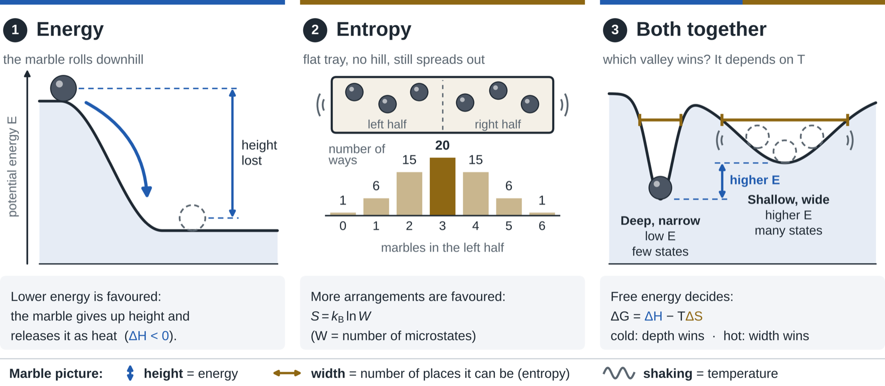

Thermodynamics II: entropy and free energy
Ice melts on a warm day although melting takes in heat. So "lower energy" cannot be the whole story of why things happen. The missing piece is entropy: the number of ways the energy can be spread out. Brown, Chapter 19 (sections 19.1–19.6).
- say what spontaneous, nonspontaneous, reversible and irreversible mean (and what they do not mean)
- calculate \(\Delta S\) for a phase change from \(\Delta S = q_\text{rev}/T\), and use the second law, \(\Delta S_\text{univ} \ge 0\)
- explain entropy as a count of microstates, \(S = k_B \ln W\), and predict the sign of \(\Delta S\) for a process
- calculate \(\Delta S^\circ\), \(\Delta H^\circ\) and \(\Delta G^\circ\) of a reaction from tabulated values
- use \(\Delta G = \Delta H - T\Delta S\) to decide whether a process is spontaneous, and at which temperatures
1 · Spontaneous processes
A spontaneous process happens on its own, without outside help. A ball rolls downhill, hot coffee cools down, iron rusts, a gas spreads out into an empty container. The reverse of a spontaneous process is nonspontaneous: the ball does not roll back up by itself.
Many spontaneous processes release heat (\(\Delta H < 0\)). But not all of them: ice melts at room temperature although melting takes in 6.01 kJ/mol (\(\Delta H > 0\)). Something else must count too. Three warnings first:
Spontaneous ≠ fast
It only says the process can run by itself, not how quickly. Diamond turning into graphite is spontaneous at room temperature (\(\Delta G^\circ = -2.84\) kJ/mol), yet diamonds last for billions of years. Speed is kinetics (weeks 10–11).
Nonspontaneous ≠ impossible
It means "not without help". Water does not split into H₂ and O₂ on its own, but it does in an electrolyser, if you keep supplying energy.
Conditions matter
Ice melts spontaneously at +1 °C but not at −1 °C. Whether a process is spontaneous depends on temperature and pressure.
Reversible and irreversible
A reversible process can be run backwards so that the system and the surroundings return to exactly where they started. It reverses direction after an infinitesimal change in some property of the system. Heat flowing from a body at \(T + dT\) to one at \(T\) is reversible: lower the first one to \(T - dT\) and the heat flows back. Heat flowing across a real temperature difference is not.
An irreversible process leaves the surroundings changed when you undo it. A gas that expands into a vacuum does no work and absorbs no heat (\(q = w = 0\), \(\Delta E = 0\)). To push it back, the surroundings have to do work on it. Reversible processes are an idealisation, infinitely slow. All real processes are irreversible, and so all spontaneous processes are irreversible. Energy is conserved along the way, but it spreads out and becomes less useful for doing work.
2 · Entropy and the second law
Entropy \(S\) measures how much the energy of a system is spread out, which is also how much of it is no longer available to do work. Loosely, it is the randomness or disorder of the system. Like \(E\) and \(H\), \(S\) is a state function. For a process at constant temperature (isothermal):
\[ \Delta S = \frac{q_\text{rev}}{T} \]\(q_\text{rev}\) is the heat that would flow along a reversible path, and \(T\) is the absolute temperature in kelvin. Because \(S\) is a state function, you may use an imagined reversible path even when the real process is irreversible. A phase change at its melting or boiling point is such a path: melt ice very slowly at 0 °C + \(dT\), and \(q_\text{rev} = \Delta H_\text{fus}\).
\[ \Delta S_\text{fus} = \frac{\Delta H_\text{fus}}{T_\text{m}} = \frac{6.01 \times 10^{3}\ \mathrm{J\,mol^{-1}}}{273.15\ \mathrm{K}} = +22.0\ \mathrm{J\,mol^{-1}\,K^{-1}} \]Is entropy conserved, like energy?
No. Hold an ice cube in your hand at 37 °C. The ice (the system) melts at 0 °C and gains +22.0 J/K per mole. Your hand (the surroundings) gives up the same heat, but at a higher temperature, so it loses less entropy: \(\Delta S_\text{surr} = -q/T_\text{surr}\). The entropy of the universe goes up. Try other temperatures:
For 1 mol of ice melting at 0 °C, \(\Delta H_\text{fus} = 6.01\) kJ/mol. The surroundings are assumed big enough that their temperature does not change. The lecture rounds to 6.0 kJ/mol and gets +22 − 19 = +3 J/K.
This is the second law of thermodynamics:
\[ \Delta S_\text{univ} = \Delta S_\text{sys} + \Delta S_\text{surr} \begin{cases} > 0 & \text{irreversible (every spontaneous process)} \\ = 0 & \text{reversible} \end{cases} \]The entropy of the universe increases in every spontaneous process. Entropy can be produced but never destroyed. The entropy of the system alone can go down (water freezing in a freezer), as long as the surroundings gain more. From now on, \(\Delta S\) without a label means \(\Delta S_\text{sys}\).
Engineers: entropy warriors
Making a microchip, a steel beam or a pure chemical creates a highly ordered piece of the world. That is allowed, but only by increasing the disorder somewhere else by more: in the power plant, the cooling water, the waste heat. A refrigerator or an air conditioner moves heat from cold to hot, the nonspontaneous direction, and pays for it with electrical work, dumping even more heat outside.
3 · Entropy on the molecular level: counting microstates
A microstate is one particular arrangement of all the molecules: every position and every speed. One macroscopic state (a given \(T\), \(P\), \(V\)) can be realised by an enormous number \(W\) of microstates. Boltzmann connected the two:
\[ S = k_B \ln W, \qquad k_B = 1.38 \times 10^{-23}\ \mathrm{J/K} \]So \(\Delta S = k_B \ln (W_\text{final}/W_\text{initial})\). A process that increases the number of available microstates increases the entropy. Nothing "pushes" the system towards high entropy: the molecules simply move at random, and almost all of the arrangements they can end up in belong to the spread-out state.
- With N = 6 (the marble tray below), count: 1 way to have all six on the left, 20 ways to have three on each side.
- Start all in the left half and watch. How long until they spread out? Do they ever all come back?
- Increase N. The bars get narrower around the middle: a 50 : 50 split becomes practically certain. For a mole of gas, the chance of finding all molecules in one half is \((1/2)^{6 \times 10^{23}}\). It never happens.
Gas expanding into a vacuum: how big is ΔS?
Double the volume and each molecule has twice as many places to be, so \(W\) grows by a factor \(2^N\):
\[ \Delta S = k_B \ln \frac{W_\text{final}}{W_\text{initial}} = k_B \ln 2^{N} = N k_B \ln 2 \]For one mole, \(N = N_A\) and \(N_A k_B = R\): \(\Delta S = R \ln 2 = 8.314 \times 0.693 = +5.76\ \mathrm{J\,mol^{-1}\,K^{-1}}\). No heat flows and \(\Delta H = 0\): this process is driven by entropy alone.
What increases entropy?
More microstates means more entropy. A molecule can store energy by moving through space (translation), by rotating, and by vibrating. More of these motions, or more room for them, means more microstates. \(S\) increases with:
- temperature: more energy to share out, more ways to share it
- volume: more places to be
- number of molecules, especially gas molecules
- complexity of the molecules: more atoms, more ways to rotate and vibrate
- melting and, much more, vaporizing: solid < liquid ≪ gas
| Substance | \(S^\circ\) (J mol⁻¹ K⁻¹) |
|---|
Standard molar entropies at 298 K, Brown Appendix C.
The third law
Cool a substance down and it has less energy, fewer motions and fewer microstates. A pure, perfect crystal at 0 K has only one microstate, \(W = 1\), so \(S = k_B \ln 1 = 0\). That gives entropy a true zero, so unlike \(H\) and \(E\), we can tabulate absolute entropies \(S^\circ\), not only changes. Note that \(S^\circ\) of an element is not zero at 25 °C.
4 · Entropy changes in reactions
Exactly like enthalpies of formation, with the standard molar entropies \(S^\circ\) from Brown Appendix C:
\[ \Delta S^\circ = \sum_\text{products} n\,S^\circ - \sum_\text{reactants} m\,S^\circ \]Example from the lecture, the Haber process:
\[ \mathrm{N_2(g)} + 3\,\mathrm{H_2(g)} \to 2\,\mathrm{NH_3(g)} \qquad \Delta S^\circ = 2(192.5) - [191.50 + 3(130.58)] = -198.2\ \mathrm{J/K} \]Negative, as you would guess: four gas molecules become two. A quick rule: if the number of moles of gas changes, it nearly always decides the sign of \(\Delta S\).
Predict the sign
For each process, is \(\Delta S_\text{sys}\) positive, negative, or close to zero?
5 · Gibbs free energy
The second law gives a criterion for spontaneity, \(\Delta S_\text{univ} > 0\), but it is awkward: you need the surroundings too. At constant \(T\) and \(P\) the heat the system releases, \(-\Delta H\), goes into the surroundings, so \(\Delta S_\text{surr} = -\Delta H/T\). Then
\[ \Delta S_\text{univ} = \Delta S - \frac{\Delta H}{T} \quad\Longrightarrow\quad -T\,\Delta S_\text{univ} = \Delta H - T\Delta S \]The right-hand side involves only the system. It is the change of a new state function, the Gibbs free energy \(G \equiv H - TS\):
\[ \Delta G = \Delta H - T\Delta S \qquad \text{(constant } T \text{ and } P) \]| \(\Delta G < 0\) | \(\Delta S_\text{univ} > 0\) | spontaneous in the forward direction (irreversible) |
| \(\Delta G = 0\) | \(\Delta S_\text{univ} = 0\) | reversible: the system is at equilibrium |
| \(\Delta G > 0\) | \(\Delta S_\text{univ} < 0\) | nonspontaneous; the reverse reaction is spontaneous |
Why "free"? \(-\Delta G\) is the most useful work you can get out of a process at constant \(T\) and \(P\): the energy that is free to be used. A battery or a fuel cell can at best deliver \(-\Delta G\) as electrical work. You will meet this again in electrochemistry (week 14).
Just like \(\Delta H_f^\circ\), the standard free energy of formation \(\Delta G_f^\circ\) is the free-energy change of forming 1 mol of a substance from its elements in their standard states (1 atm, 25 °C), and it is zero for an element in its standard state. Then
\[ \Delta G^\circ_\text{rxn} = \sum_\text{products} n\,\Delta G_f^\circ - \sum_\text{reactants} m\,\Delta G_f^\circ \]| Species | Coef. | \(\Delta H_f^\circ\) (kJ/mol) | \(S^\circ\) (J mol⁻¹ K⁻¹) | \(\Delta G_f^\circ\) (kJ/mol) |
|---|
The two ways of getting \(\Delta G^\circ\) at 298 K (from \(\Delta G_f^\circ\), and from \(\Delta H^\circ - T\Delta S^\circ\)) agree to within rounding of the table values. Watch the units: \(\Delta S\) is in J/K, \(\Delta H\) and \(\Delta G\) in kJ. Divide \(\Delta S\) by 1000 before you combine them.
6 · Free energy and temperature
\(\Delta G = \Delta H - T\Delta S\) is a contest between two terms. \(\Delta H\) is the energy term: release heat and you make the surroundings more disordered. \(-T\Delta S\) is the entropy term, and it grows with temperature. So the temperature decides which one wins. In the marble picture below, the height of a valley is the energy, its width is the number of states, and shaking the tray is the temperature.

| \(\Delta H\) | \(\Delta S\) | \(\Delta G = \Delta H - T\Delta S\) | Lecture example | |
|---|---|---|---|---|
| 1 | − (favours) | + (favours) | always negative: spontaneous at all T | 2 O₃(g) → 3 O₂(g) |
| 2 | + (against) | − (against) | always positive: never spontaneous | 3 O₂(g) → 2 O₃(g) |
| 3 | − (favours) | − (against) | negative at low T | H₂O(l) → H₂O(s) |
| 4 | + (against) | + (favours) | negative at high T | H₂O(s) → H₂O(l) |
In cases 3 and 4 the sign changes where \(\Delta G = 0\), at the crossover temperature \(T = \Delta H/\Delta S\). For a phase change that is the melting or boiling point.
The plot assumes that \(\Delta H\) and \(\Delta S\) do not change with temperature (Brown's approximation in 19.6; they do change a little). That is why water comes out at 97 °C instead of 100 °C. Values from Brown Appendix C; water melting with \(\Delta H_\text{fus} = 6.01\) kJ/mol and \(\Delta S_\text{fus} = 22.0\) J mol⁻¹ K⁻¹.
Trouton's rule: a quick estimate of boiling points
At the normal boiling point \(\Delta G_\text{vap} = 0\), so \(T_b = \Delta H_\text{vap}/\Delta S_\text{vap}\). For many liquids \(\Delta S_\text{vap}\) is about 88 J mol⁻¹ K⁻¹: going from liquid to gas opens up roughly the same number of new microstates. Liquids with hydrogen bonds (water, ethanol) are more ordered as liquids and have a larger \(\Delta S_\text{vap}\) (water: 109 J mol⁻¹ K⁻¹ at 100 °C).
Not covered in the lecture this year and not on this page: Brown 19.7 (free energy and the equilibrium constant). Equilibrium itself comes in week 12.
Quick self-check
A process is spontaneous. What do you know for sure?
1 mol of water freezes at 0 °C (ΔH_fus = 6.01 kJ/mol). What is ΔS of the water?
Which has the larger standard molar entropy at 25 °C?
A reaction has ΔH = +50 kJ and ΔS = +100 J/K. Above which temperature is it spontaneous?
What is ΔG for ice melting at exactly 0 °C and 1 atm?
A gas expands into a vacuum at constant temperature. What drives it?
Summary
| Entropy, isothermal | \(\Delta S = q_\text{rev}/T\) | phase change: \(\Delta S = \Delta H/T\) |
| Second law | \(\Delta S_\text{univ} = \Delta S_\text{sys} + \Delta S_\text{surr} \ge 0\) | > 0 spontaneous, = 0 reversible |
| Boltzmann | \(S = k_B \ln W\) | \(k_B\) = 1.38 × 10⁻²³ J/K |
| Third law | \(S = 0\) for a perfect crystal at 0 K | absolute \(S^\circ\) can be tabulated |
| Reaction entropy | \(\Delta S^\circ = \sum n\,S^\circ(\text{prod}) - \sum m\,S^\circ(\text{react})\) | units: J/K |
| Gibbs free energy | \(\Delta G = \Delta H - T\Delta S\) | \(\Delta G < 0\): spontaneous (const. \(T\), \(P\)) |
| Standard free energy | \(\Delta G^\circ = \sum n\,\Delta G_f^\circ(\text{prod}) - \sum m\,\Delta G_f^\circ(\text{react})\) | elements: \(\Delta G_f^\circ = 0\) |
| Crossover temperature | \(T = \Delta H/\Delta S\) | where \(\Delta G\) changes sign |
Covered in Lecture 5: Brown 19.1–19.6. Last week's page: Thermodynamics I.